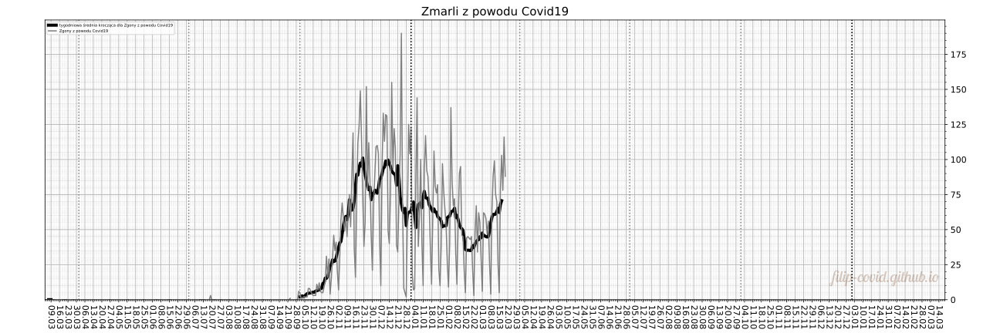

In the chart above, on the vertical axis the scale is logarithmic.
Last update: Saturday, 26.12.2020, 9:44:31 (graphs updated less frequently (about once a month))
[Home page] [Polish version] [Selected counties (only in polish)] [More graphs] [Vaccination] [Sources] [Contact]
coronavirus SARS-CoV-2, covid19
At the graphs below, the bold colourful lines are 7 day moving average of the numbers represented by thin gray lines. Zoom to see the finer grid with division on days.
in colours green, blue, yellow, red, violet, black respectively.
In the chart above, on the vertical axis the scale is logarithmic.
